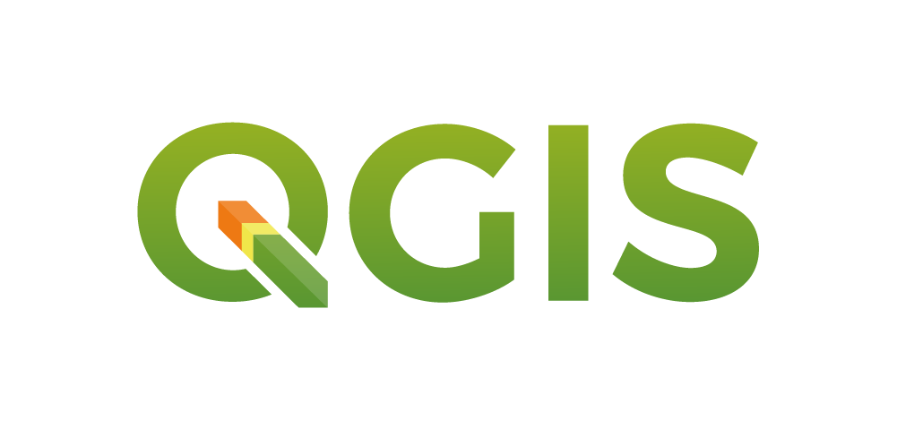
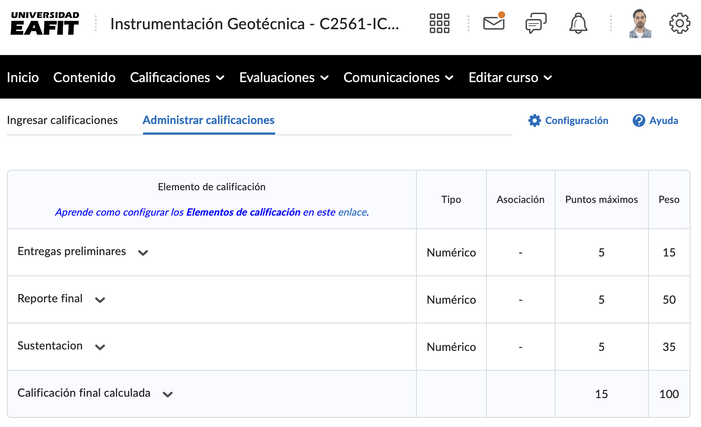

Docentes
- Ingeniera Civil
- MSc. Ingeniería
- Líder de observatorio de amenazas y riesgos proyecto SIATA
- Profesora de cátedra
- Ingeniero Geólogo
- MSc. Ingeniería
- Líder de Teledetección proyecto SIATA
- Profesor de cátedra
Contenido
- Conceptos básicos de la instrumentación geotécnica
- Variables hidrometeorológicas
- El agua en el suelo
- Medición de deformaciones
- Interpretación y análisis de datos
- Fundamentos de Python (variables, listas, condicionales, funciones y bucles for)
- Procesamiento de series temporales con Pandas
- Visualización de datos con Matplotlib
- Análisis y manejo de series temporales de sensores
Lógica Condicional e Iteración en Python: if / elif / else y for
- Secuencial: Se evalúa de arriba hacia abajo (
if➔elif➔else). - Exclusión mutua: Tan pronto una condición da
True, ejecuta su bloque y sale inmediatamente sin evaluar las demás. - else sin condición: Es la red de seguridad si ninguna de las ramas previas se cumplió.
🐍 Probar en Laboratorio Interactivo • Lecciones 1.3 a 1.5 ➔
Metodología
(Clase teórica)
(Clase práctica)
Tema fuera de clase
(Proyecto individual)
El curso se dará por perdido con ausencia de 4 clases.
Metodología
La especialización y, por tanto, el curso es PRESENCIAL.
¡No se permite asistencia remota!
Herramientas
Documentación y repositorio oficial del curso en GitHub:
Análisis de datos geotécnicos

Herramientas
¡Apoyo tecnológico!
En la era AI no debe haber trabajos mal escritos, gráficas deficientes, errores de ortografía y gramática, etc.

Espacios digitales
Microsoft Teams
Toda la comunicación oficial será a través de Microsoft Teams.

EAFIT Interactiva
Todas las notas oficiales se registrarán en EAFIT Interactiva.
Evaluación
Caso de estudio: propuesta de proyecto integrado para la definición y análisis de instrumentación geotécnica.
Porcentaje propuesto
Porcentaje propuesto
Porcentaje propuesto
Evaluación
Indicaciones generales para el reporte o documento escrito:
- La información del caso de estudio será asignada por el docente.
- El trabajo se desarrollará de manera individual.
- Formato de entrega: PDF.
- Extensión máxima: 12 páginas (sin incluir portada ni referencias).
Redacción clara y técnica, evitando geopoesía.
Evaluación: Estructura del reporte técnico
El reporte inicia contextualizando el área de estudio, describiendo los antecedentes y la problemática geotécnica detectada. Se justifica la necesidad del monitoreo, enfatizando los riesgos asociados y la importancia de anticipar eventos críticos mediante herramientas de observación. Se integra información obtenida en visitas a terreno e inspecciones preliminares.
Se detalla el sistema de monitoreo implementado, especificando los sensores utilizados (extensómetros, acelerómetros, sensores de humedad, pluviómetros), las variables medidas, su ubicación y la frecuencia de registro. Se recomienda el uso de esquemas, mapas o croquis para facilitar la comprensión espacial del sistema.
Evaluación: Análisis de los Resultados
Esta sección presenta un análisis técnico de las series temporales y espaciales obtenidas. Se identifican patrones, tendencias y relaciones entre variables (por ejemplo, lluvia y deformación). Se destacan eventos relevantes (lluvias intensas, desplazamientos, intervenciones antrópicas) y se analizan desviaciones respecto al comportamiento esperado.
Evaluación: Umbrales y Cierre
Se propone un sistema de umbrales y criterios de alerta temprana, definiendo valores críticos para variables clave, basados en el análisis de datos. Se presenta un esquema o tabla con los niveles de alerta (normal, atención, alerta, alarma), condiciones de activación y acciones recomendadas para cada nivel.
- Principales hallazgos del análisis de datos.
- Identificación de eventos críticos y zonas inestables.
Normativas, publicaciones y fuentes bibliográficas de soporte técnico.
Evaluación: Presentación Oral
Elementos importantes de la presentación
⏱️ Duración máxima: 20 minEnfócate en presentar de forma sintética y clara el contexto, el sistema de monitoreo, los hallazgos principales y la propuesta de alerta, demostrando comprensión técnica y capacidad crítica. Es fundamental integrar todos los análisis realizados, mostrando cómo se complementan entre sí y justificando las interpretaciones y umbrales propuestos.
Utiliza buenas y claras herramientas visuales para apoyar tu exposición y asegúrate de mantener fluidez y coherencia en el discurso. No repitas textualmente el reporte; en cambio, explica, interpreta y defiende tus conclusiones, mostrando criterio técnico y capacidad para responder preguntas técnicas sobre tus decisiones y metodología.
Evaluación: Fechas de Entrega
Próxima semana
Consentimiento informado
Horarios de atención y asesoría
- Canal de Teams: Consultas cortas
- Correo: jalvarezz@eafit.edu.co (Consultas cortas)
- Horario: Lunes 2pm – 4pm (Programar espacio)
- Canal de Teams: Consultas cortas
- Correo: fjgomezc@eafit.edu.co (Consultas cortas)
- Horario: Lunes 10am – 12m (Programar espacio)